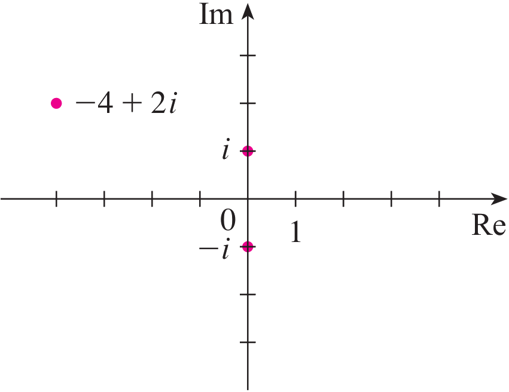
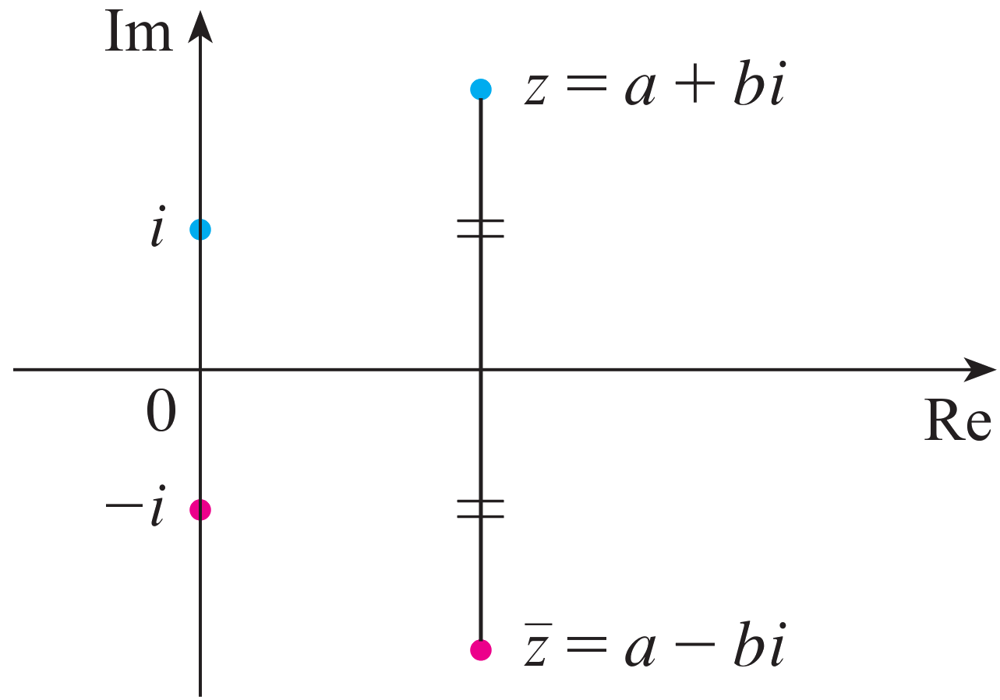

Complex Numbers¶
Complex numbers have two parts real part and the imaginary part. A complex number is usually represented as \(z = a+b\,i\), where \(a\) and \(b\) are real numbers, and \(i\) is a symbol for indicating the imaginary part (\(i^2=-1\)). The real part of the complex number \(z = a+b\,i\) is the real number \(a\) and the imaginary part is the real number \(b\).
A Complex number can be represented by the ordered pair. This representation can be handy in plotting this number in the Argand plane. However, here the horizontal axis is called the real axis, and the vertical axis is called the imaginary axis.
{kind=link}
The fields of most interest will be the familiar field of real numbers, denoted as \(\mathbb{R}\), and the field of complex numbers, denoted as \(\mathbb{C}\).
Addition and Subtraction of Complex Numbers¶
Complex numbers \(z_1=a+bi\) and \(z_2=c+di\), are equal only if their real parts are equal, and their imaginary parts are equal. That is
Now, for two complex numbers \(z_1=a+bi\) and \(z_2=c+di\), we have
Addition: \(z_1+z_2=\left(a+b\,i\right)+\left(c+d\,i\right)=\left(a+c\right)+\left(b+d\right)\,i,\)
Subtraction: \(z_1-z_2=\left(a+b\,i\right)-\left(c+d\,i\right)=\left(a-c\right)+\left(b-d\right)\,i.\)
Example:
\((-3+6i) + (5-i) = 2+5i\).
\((4-7i) + (6-2i) = 10-9i\).
\((-3+6i) - (5-i) = -8+7i\).
\((4-7i) - (6-2i) = -2-5i\).
Let \(z\), \(w\), and \(v\) be complex numbers.
\(z + w = w + z\).
\((z + w) + v = z + (w + v)\).
\(z + 0 =0+z= z\).
For every \(z=a+bi\) there exists a complex number \(-z = -a -bi\) such that
\(z + (-z) =(-z)+z=0.\)
If \(z=a+bi\) and \(w=c+di\), then \(z+w=(a+c)+(b+d)i\).
Geometrically, we have:

We can see that \(0\), \(z\), \(w\), and \(z+w\) are the vertices of a parallelogram.
Multiplication of Complex Numbers¶
The product of complex numbers two complex numbers \(z_1=a+b\,i\) and \(z_2=c+d\,i\), we have,
Since \(i^2=-1\), this becomes
Example: Multiplication of Complex Numbers
Similarly,
Let \(z, w\) and \(v\) be complex numbers.
\(zw=wz\).
\((zw)v=z(wv)\).
\(z (w+v) = zw + zv\).
\(1z=z\).
For each \(z \neq 0\), there exists \(z^{-1}\) such that
\(z z^{-1} =z^{-1}z= 1\).
Example: Find all complex numbers \(z=a+bi\) with \(b\neq 0\) such that \(z^2=-3+4i\).
Solution: We have
Hence,
Since \(2ab=4\), \(a=\frac{2}{b}\).
Substituting this into the first equation gives us
Now, \(b^4-3b^2-4=0\) can be factored into
Since \(b\in \mathbb{R}\) and \(b^2+1\) has no real roots, \(b=2\) or \(b=-2\).
Since \(a=\frac{2}{b}\), it follows that
when \(b=2\), \(a=1\), and \(z=a+bi=1+2i\);
when \(b=-2\), \(a=-1\), and \(z=a+bi=-1-2i\).
Therefore, if \(z^2=-3+4i\), then \(z=1+2i\) or \(z=-1-2i\).
The Conjugate of a Complex Number¶
Conjugate of a Complex Number: For the complex number \(z = a+b\,i\), we define its \textbf{complex conjugate} to be \(\overline{z} = a-b\,i\). $\(\overline{z} = \overline{a+b\,i}=a-b\,i.\)$
Example: Conjugate of a Complex Number
The geometric interpretation of the complex conjugate is shown in Figure following figure.
{kind=link}
Some of the properties of the complex conjugate are listed in the following theorem.
Let \(z\) and \(w\) be complex numbers. Then, the following properties of the conjugate hold.
\(\overline{z\pm w}=\overline{z}\pm \overline{w}\),
\(\overline{zw} = \overline{z}\, \overline{w}\),
\(\overline{\left(\overline{z}\right)} = z\),
\(\overline{\left(\dfrac{z}{w}\right)}=\dfrac{\overline{z}}{\overline{w}}\),
\(z\) is real if and only if \(\overline{z} = z\).
Let \(z=a+b\,i\) be a complex number. Then, \[\begin{aligned} z\overline{z}=\left(a+b\,i\right)\left(a-b\,i\right)=\left(a^2+b^2\right)+\left(ab-ab\right)\,i=a^2+b^2.\end{aligned}\]
The quotient \(z=a+b\,i\) divided by \(w=c+d\,i\), where \(c^2+d^2\neq0\), is \[\begin{aligned} \dfrac{z}{w}&=\dfrac{a+b\,i}{c+d\,i}=\dfrac{\left(a+b\,i\right)}{\left(c+d\,i\right)}\times\dfrac{\left(c-d\,i\right)}{\left(c-d\,i\right)}= \dfrac{\left(a+b\,i\right)\left(c-d\,i\right)}{\left(c+d\,i\right)\left(c-d\,i\right)}= \dfrac{\left(a+b\,i\right)\left(c-d\,i\right)}{c^2+d^2} \\ & =\dfrac{1}{c^2+d^2}\left(a+b\,i\right)\left(c-d\,i\right)= \left(\dfrac{ac+bd}{c^2+d^2}\right)+\left(\dfrac{bc-ad}{c^2+d^2}\right)\,i\end{aligned}\]
Example:
Inverse of a Complex Number: Let \(z=a+b\,i\) be a complex number. Then the multiplicative inverse of \(z\), written \(z^{-1}\) exists if and only if \(a^2 +b^2 \neq 0\) and is given by
Example: When \(z = 2 + 6i\), \(z^{-1}\) is defined, and
Note that we can always check that \(zz^{-1}=1\).
The Absolute Value (Modulus) of a Complex Number¶
Absolute Value: The modulus, or absolute value, of a complex number\(z=a+b\,i\) is its distance from the origin.
{kind=link}
Let \(z\) and \(w\) be complex numbers.
\(z\overline{z}=\left(a+b\,i\right)\left(a-b\,i\right)=a^2+ab\,i-ab\,i-b\,i^2=a^2+b^2=|z|^2\).
\(\dfrac{1}{z}= \dfrac{\overline{z}}{|z|^2}\).
\(|z|\geq 0\) for all \(z\).
\(|z|=0\) if and only if \(z=0\).
\(\dfrac{z}{w}=\dfrac{z}{w}\dfrac{\overline{w}}{\overline{w}}=\dfrac{z\overline{w}}{|w|^2},\)
Example:
\(|-3+4i|=\sqrt{3^2+4^2}= \sqrt{25}= 5\).
\(|3-2i|= \sqrt{3^2+2^2}=\sqrt{13}\).
\(|i|= \sqrt{1^2}=1\).
For complex numbers \(z=a+b\,i\) and \(w=c+d\,i\), \[|zw|=|z||w|.\]
For complex numbers \(z=a+b\,i\) and \(w=c+d\,i\) such that \(c^2+d^2\neq0\) \[\left|\frac{z}{w}\right|=\frac{|z|}{|w|}.\]
For complex numbers \(z=a+b\,i\) and \(c\in \mathbb{R}\), \[|cz|=|c||z|.\]
Let \(z\), \(w\) be complex numbers. The following two inequalities hold for any complex numbers \(z\), \(w\): \[\begin{aligned} |z+w| \leq |z|+|w|,\\ \left||z|-|w|\right| \leq |z-w|\end{aligned}\] The first one is called the Triangle Inequality.
Example: Let \(z=4-3i\), \(w=1+i\), and \(u=2-2i\). Then, \(\left|\dfrac{w-\overline{wu}}{zu}\right|\) equals
a) \(\dfrac{1}{10\sqrt{2}}\)
b) \(\dfrac{1}{2\sqrt{5}}\)
c) \(\dfrac{1}{5}\)
d) \(\dfrac{9}{10\sqrt{2}}\)
e) \(\dfrac{1}{\sqrt{2}}\)
Solution: We are going to use the following fact,
\[\left| c(a+bi)\right|=|c||a+bi|=|c|\sqrt{a^2+b^2}.\]
Therefore,
Refrences¶
Kuttler, Kenneth. “A First Course in Linear Algebra (Lyryx).” (2018).
Nicholson, W. Keith. “Linear Algebra with Applications (Lyryx).” (2018).
Stewart, James, Daniel K. Clegg, and Saleem Watson. Calculus: early transcendentals. Cengage Learning, 2020.